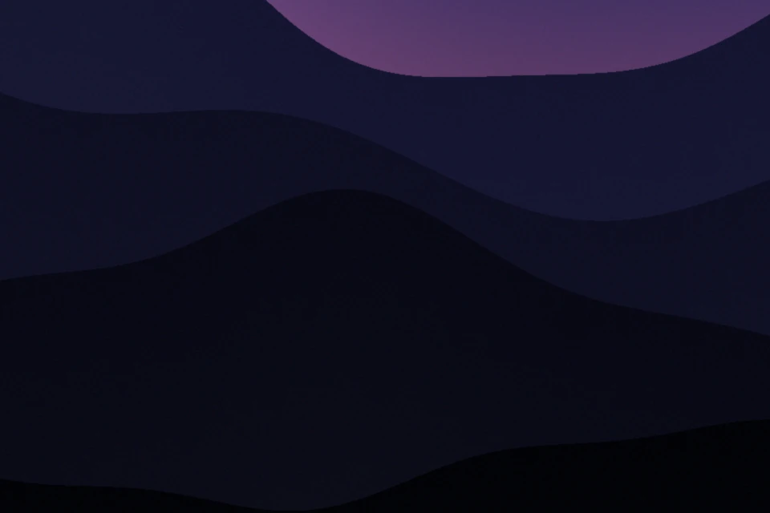
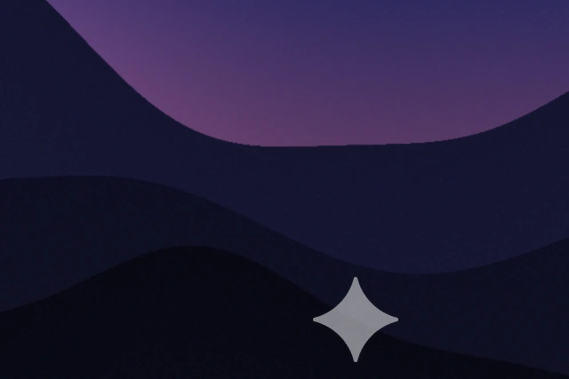

Clean plates,
every frame
Plates finds a generator’s visible corner mark and removes it by itself, on pictures and on video, and it can enlarge pictures too.
Download for WindowsFree · 74 MB

Drag across to see it
A generated picture with a Gemini-style star added, then cleaned by Plates. No pixel ended up more than one level from the picture underneath.


BeforeAfterWhat it does
- It finds the mark for you
- No menus for each generator. Drop a folder and Plates works out what is on each file: the Gemini star at any size, or a corner label from Grok, Doubao, Kling and others.
- Dark scenes stay clean
- Plates measures the mark’s real strength from the pixels. For video it learns the star that clip actually carries, so nothing is left behind in a night shot.
- Your originals are safe
- Every clean file is a new copy in a new folder. Plates refuses to write over an original.
- Enlarge in the same pass
- Real-ESRGAN models run on your graphics card to take pictures to 2× or 4×. Photo and anime models are included, and more download when you ask.
- Windows 10 or 11
- 64-bit, with the WebView2 runtime that Windows 11 already includes.
- Windows may warn you
- The app isn’t code-signed, so SmartScreen can show “Windows protected your PC”. Choose More info, then Run anyway. Only do that for a file from this page.
- The first open is slower
- It unpacks itself, which can take up to half a minute. It keeps its files in a folder beside the exe.
Questions
What can it remove?
Visible corner marks from AI generators: the Gemini sparkle, plus labels from Grok, Doubao, Jimeng, Tongyi, Qwen, Kling, Wenxin and Veo. It works on pictures and video.
Does it hide that a picture is AI-made?
No. It removes the visible mark only. Invisible marks such as SynthID stay in the file. Please use Plates on work you made or have the right to edit, and be open about AI work where that matters.
Will it touch a signature or a caption?
It looks for see-through labels placed tight in a corner. Solid text, and text further in, is left alone. Very occasionally a label can be missed, or a see-through signature in the corner can look like one, so check your files with Preview.
Does anything get uploaded?
No. Everything runs on your computer. Plates only goes online when you ask it to download a model or FFmpeg.
Does it need a graphics card?
Removing a mark doesn’t. Upscaling is much faster with one, and it can run on the processor if you choose CPU in Settings.
Privacy
Plates has no accounts, no analytics and no ads. Your files and settings stay on your computer. It only connects to the internet for the work you ask it to do and to check for updates to its tools. This website uses Google Fonts and GitHub Pages, and sets no cookies of its own.